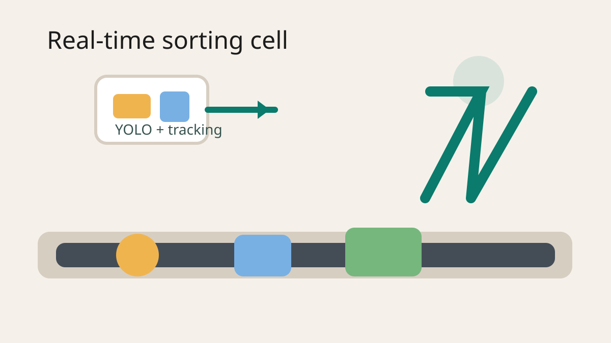

Real-Time Conveyor-Belt Object Detection and Robotic Sorting
A calibrated vision and robot-integration pipeline for mixed-object sorting on a moving conveyor in real time.
Overview
Mixed-item sorting on moving belts requires more than object detection. The system has to stay stable from frame to frame, convert detections into usable physical coordinates, and deliver outputs the robot can act on before the part has moved out of reach.
Implementation
I built the vision stack in Python using YOLO and OpenCV, then added silhouette-based centroid refinement and homography calibration so detections could be projected into world coordinates. On top of that, I used confidence-weighted tracking and label stabilization to reduce flicker and misclassification when objects were partially occluded or visually similar.
The perception pipeline fed a delta-arm robotic sorting workflow, so the project became an end-to-end physical AI system rather than just a detection demo. I also set up rapid auto-labeling and retraining loops so the model could adapt as the object set expanded from single containers to bundled products.
Results
The final system supported bottles, cans, and six-pack bundles while improving localization consistency and reducing label churn across frames. More importantly, the outputs were robust enough to drive downstream sorting actions in a real cell instead of staying trapped in image space.
What I Built
- Real-time YOLO and OpenCV detection pipeline for mixed objects on a conveyor.
- Centroid refinement from object silhouettes for more stable pick localization.
- Homography-based mapping from image coordinates to robot-usable world coordinates.
- Confidence-weighted tracking, label stabilization, and retraining workflows for new classes.
- Programming, assembly, testing, and integration of the downstream delta-arm sorting structure.
Project Media
